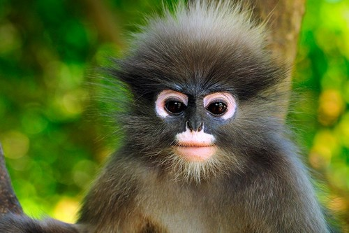

DUSKY LEAF MONKEYS
The dusky leaf monkey, spectacled langur, or spectacled leaf monkey (Trachypithecus obscurus) is a species of primate in the family Cercopithecidae. It is found in Malaysia, Burma, and Thailand.
WHERE WILL YOU FIND THEM?
You will find the monkeys at the monkey cage near the Monkey Trail.